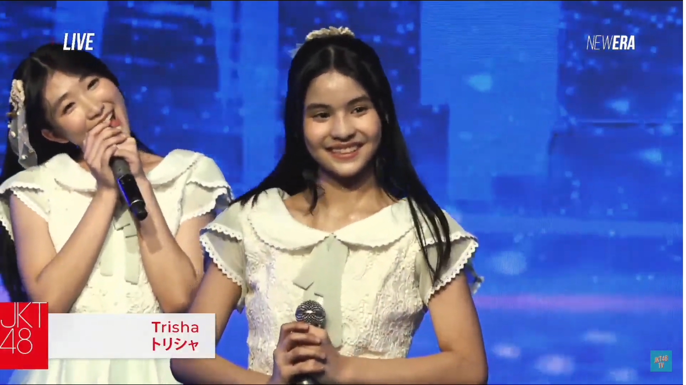

Beranda
Perjalanan di JKT48
Show Recap
Foto-Video
Perjalanan Trisha Sebagai Member JKT48
Perkenalan bersama Generasi 12 JKT48
Show pertama di Anniversary JKT48 ke 12
Show Theater Pertama bersama Gen 11
Shonichi Setlist Pajama Drive bersama Gen 11 dan 12

Kampanye Sousenkyo 2024 Single ke-26 #Sukinanda
JKT48 13th Anniversary